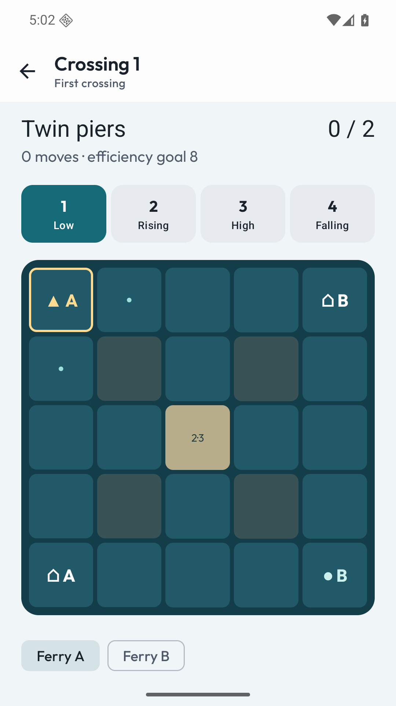
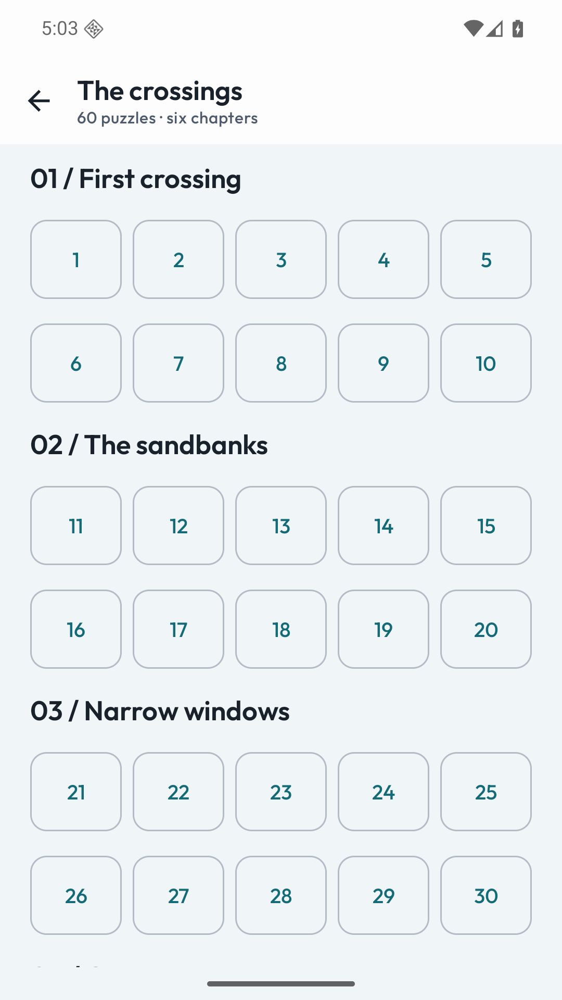
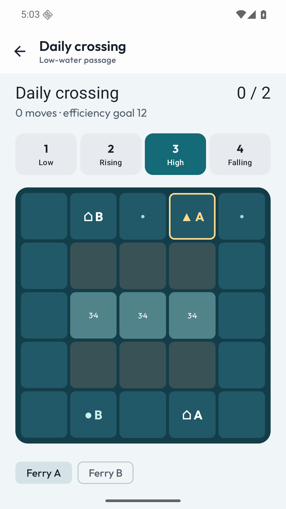

Read the water
Every sail or wait advances a visible four-phase tide. Shallow crossings open and close in a predictable rhythm.
Two ferries. Two deliveries. One sea that changes with every move.
View on Google PlaySubmitted to Google Play · In reviewUS $2.99 · UK £2.49 · India ₹99
One upfront purchase. Every feature included.

Guide two ferries through 60 tide-changing puzzles, with undo and smart hints. All core features are included in the purchase, with no extra unlocks.
Every sail or wait advances a visible four-phase tide. Shallow crossings open and close in a predictable rhythm.
Ferries cannot overlap. A boat caught on dry ground waits for water while the other ferry keeps moving.
Explore six chapters, replay for optional move-efficiency goals and ask the solver for a route from your current position.
An offline daily challenge uses validated puzzle variants. Share your result as text, without an online leaderboard.


Undo is unlimited, including after a completed puzzle. Hints search the current board and can be followed one move at a time. Every published efficiency goal is the shortest solution from the initial position. Progress and the entire active move history are saved locally.
The daily challenge uses your device’s local date. No timer, multiplayer, real-world navigation or online ranking. All 60 puzzles are included.
Android 8.0 or later. English interface. Progress and backups stay on your device. Read the practical details.
No. Low, rising, high and falling phases repeat in a visible cycle. Each tile’s open phases are shown.
You can undo without limit or restart. Hints search from the current position and tell you if you need to undo.
No. All 60 crossings, daily variants and solver-backed hints are included in the upfront price.